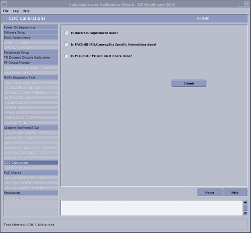

Operating Documentation
Direction 5670006, Rev# 1
Discovery MR750w GEM Service Methods
Module Version 3.0, Version Date 8/19/08
Operating Documentation |
| Required Persons | Preliminary Reqs | Procedure | Finalization |
|---|---|---|---|
| 2 | Not Applicable | 3 hours | Not Applicable |
This procedure details the global operator cabinet (GOC) calibrations of the Install and Calibration Wizard (ICW) . There are three tasks that must be completed and checked off:
Intercom Adjustments
Picture Archiving and Communication System-Hospital Information System/Radiology Information System (PACS-HIS/RIS) and networking
Pneumatic Patient Alert Check
| Item | Qty | Effectivity | Part# | Manufacturer | |
|---|---|---|---|---|---|
| Non-Magnetic Tool Kit | 1 | - | 5112581 | - | |
| Condition | Reference | Effectivity |
|---|---|---|
Acquire HIS/RIS and filming network information from customer administrator. | - | - |
Insert the Service Key in the system PC.
Launch the Service Browser (Common Service Desktop).
Click the [Calibration] tab.
| NOTE: | If you are in Install or Upgrade mode, click [Install and Calibration Wizard] and then [Click here to start the tool]. |
If it is required to be completed, the [GOC Calibrations] checklist is one of the final items listed in the ICW (see Illustration 1).
Illustration 1: ICW GOC Calibrations

Perform the Intercom Adjustments for GOC-AA (see Intercom Adjustment for GOC Audio Box). When this is complete, check the box next to Is Intercom Adjustment done?
Perform the Radiology Information System (RIS) set up (see HIS/RIS Setup and Troubleshooting). When this is complete, check the box next to Is PACS:HIS/RIS:Camera:Site Specific Networking done?
Perform the Pneumatic Patient Alert Check. Do this by compressing the Patient warning “Squeeze bulb” that is located by the magnet enclosure and is connected to the physiological acquisition controller (PAC) assembly. The Audio Alert, which is a small box that is located near the console (see Illustration 2), should produce an audible alarm. When this is complete, check the box next to Is Pneumatic Patient Alert Check done?
Illustration 2: Audio Alert Location

To calibrate the monitor, follow the LCD Monitor Screen Adjustments procedure.
Click [Submit]. This completes the [GOC Calibrations] section of the ICW.
Return to the Installation and Calibration Wizard for information regarding how to advance to the next calibration and for links to other calibration procedures.